2 Cách lấy lại mật khẩu Facebook nhanh chóng trong 1 nốt nhạc

Ty Nguyen
CEO ❤️ AhaChat. Love babies & chatbot.
Việc mất hay quên mật khẩu của tài khoản Facebook đã không còn là điều gì quá xa lạ với người dùng Facebook. Nếu chẳng may bạn vô tình quên mật khẩu đăng nhập vào tài khoản Facebook của bạn thì đừng lo nhé. Bài viết dưới đây sẽ hướng dẫn bạn cách lấy lại mật khẩu Facebook nhanh chóng và hiệu quả, cùng theo dõi nhé!
1. Cách lấy lại mật khẩu Facebook bằng số điện thoại hoặc email đã đăng ký
Để lấy lại được mật khẩu Facebook bằng số điện hoặc email đã đăng ký, bạn thực hiện theo các bước sau:
Bước 1: Tại giao diện đăng nhập Facebook, bạn click chuột vào Quên tài khoản.
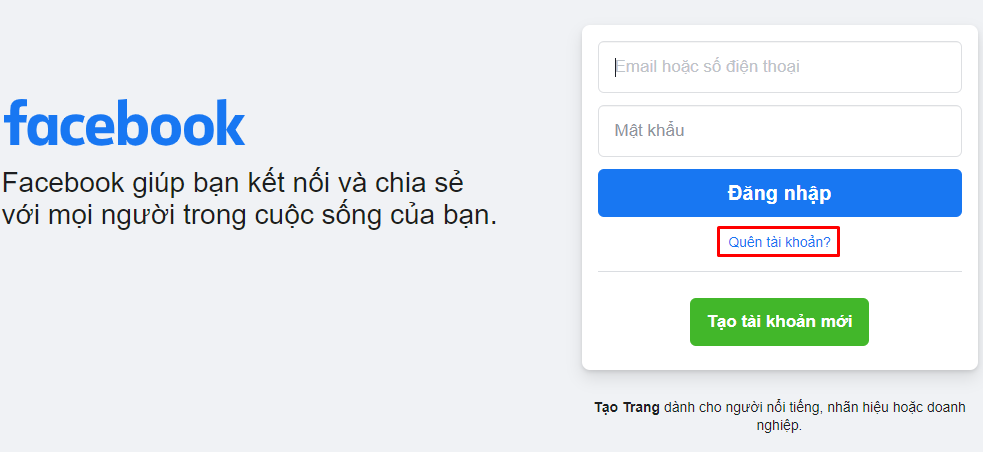
Bước 2: Khi bạn ấn vào Quên tài khoản, xuất hiện giao diện Tìm tài khoản của bạn. Lúc này bạn nhập số điện thoại hoặc email đã đăng ký với Facebook, sau đó ấn Tìm kiếm.
Dựa vào 1 trong 2 thông tin bạn cung cấp, Facebook sẽ dựa vào đó để tìm tài khoản mà bạn muốn lấy lại mật khẩu.
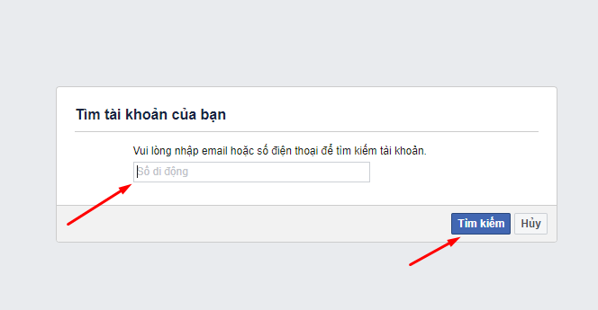
Bước 3: Đến bước này, bạn sẽ có 2 cách để lấy lại mật khẩu Facebook rất dễ dàng. Bạn có thể chọn lấy lại mật khẩu thông qua email đã đăng ký hoặc thông qua số điện thoại bạn đã đăng ký. Bạn thấy trường hợp nào thuận tiện với bạn thì bạn chọn nhé.
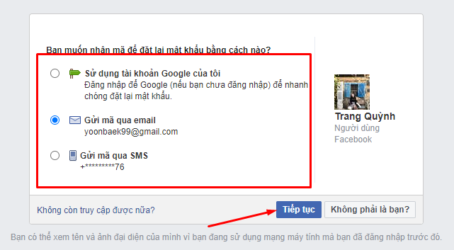
Sau khi tích chọn vào cách để đặt lại mật khẩu Facebook, bạn ấn Tiếp tục.
Trường hợp 1: Gửi mã qua email
Nếu bạn tích chọn vào trường hợp gửi mã qua email, lúc này facebook sẽ gửi cho bạn mã bảo mật vào email. Bạn kiểm tra email sau đó nhập mã Facebook vừa gửi rồi ấn Tiếp tục.
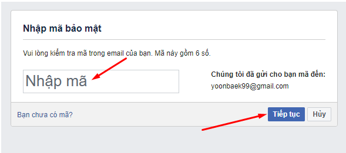
Sau khi ấn tiếp tục, hiện ra giao diện cho bạn đặt lại mật khẩu mới cho tài khoản Facebook của bạn.
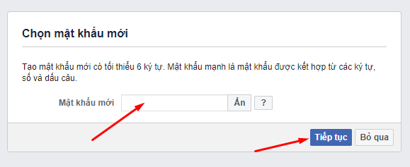
Như vậy là bạn đã lấy lại mật khẩu Facebook thành công với cách gửi mã xác nhận qua email đã đăng ký.
Trường hợp 2: Gửi mã qua số điện thoại đã đăng ký
So với trường hợp gửi mã qua email đã đăng ký thì các bước thực hiện gửi mã qua số điện thoại nó cũng tương tự. Thay vì gửi mã qua email thì lúc này Facebook sẽ gửi cho bạn qua tin nhắn SMS số điện thoại bạn đăng ký.
Khi có mã gửi về điện thoại, các bước thao tác thực hiện lấy lại mật khẩu Facebook tương tự như có mã gửi về mail.
Như vậy là việc lấy lại mật khẩu Facebook thông qua số điện thoại hoặc email đăng ký đã hoàn tất rồi nhé.
2. Cách lấy lại mật khẩu Facebook thông qua danh sách bạn bè đáng tin cậy
Nếu tài khoản Facebook bị mất/quên mật khẩu của bạn đã sử dụng tính năng Liên hệ tin cậy, bạn có thể nhờ vào tính năng này để lấy lại mật khẩu Facebook.
Bước 1: Truy cập vào website facebook.com, tại giao diện trang chủ đăng nhập Facebook, bạn click chuột vào Quên tài khoản.
Bước 2: Tiếp theo, bạn cần nhận diện tài khoản của mình bằng cách nhập số điện thoại hoặc email đã đăng ký. Sau đó, bạn ấn Tìm kiếm.
Bước 3: Facebook sẽ hỏi bạn muốn đặt lại mật khẩu Facebook theo cách nào. Nếu không nhớ các cách xác thực mà Facebook đưa ra, bạn ấn Không còn truy cập được nữa.
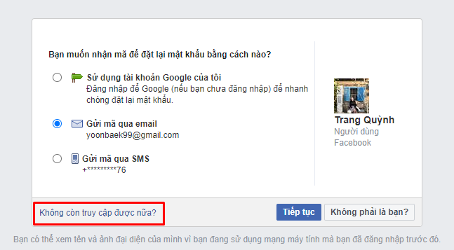
Bước 4: Tiếp đến, bạn click chuột vào Tôi không thể truy cập email.
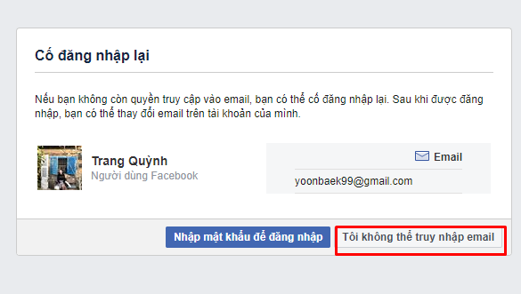
Sau đó, giao diện Làm thế nào để chúng tôi có thể liên lạc với bạn xuất hiện. Lúc này, Facebook yêu cầu bạn nhập số điện thoại hoặc email khác để Facebook có thể gửi thông tin khôi phục tài khoản qua đó. sau đó bạn nhấn Tiếp tục.
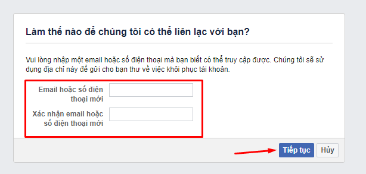
Một lưu ý khi bạn nhập email hoặc số điện thoại vào để xác minh thì hãy sử dụng email hoặc số điện thoại không liên quan đến bất cứ tài khoản Facebook nào.
Bước 5: Tiếp đến giao diện Nhờ người liên hệ đáng tin cậy giúp đỡ, bạn click chuột vào Công khai người liên hệ đáng tin cậy của tôi.
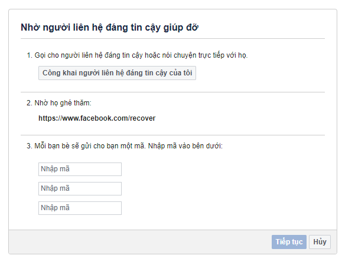
Bước 6: Với bước này, bạn cần nhập đúng tên 1 tài khoản trong 3 hoặc 5 tài khoản Facebook trong danh sách liên hệ tin cậy của bạn đã cài trước đó, sau đó ấn Chấp nhận.
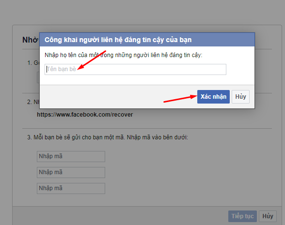
Bước 7: Nếu bạn nhập đúng danh sách bạn bè liên hệ tin cậy thì các tài khoản đó sẽ xuất hiện. Tiếp đến, bạn gửi cho những tài khoản đó đường link dưới đây để nhờ họ vào đó đăng nhập lấy mã xác nhận giúp bạn:
Bước 8: Khi họ nhấp vào đường link bạn gửi trên, họ sẽ thao tác theo các yêu cầu mà Facebook đưa ra để xác minh tài khoản Facebook của bạn có là bạn bè với tài khoản liên hệ tin cậy hay không. Sau khi đã xác minh đầy đủ, Facebook sẽ gửi 1 đoạn mã gồm 4 chữ số đến bạn bè của bạn. Bạn nhờ bạn bè của bạn gửi các đoạn mã đó cho bạn.
Bước 9: Bạn cần phải nhập đầy đủ các đoạn mã của từng tài khoản đáng tin cậy vào ô nhập mã ở giao diện Nhờ người liên hệ đáng tin cậy giúp đỡ. Khi đã nhập đầy đủ, bạn ấn Tiếp tục.
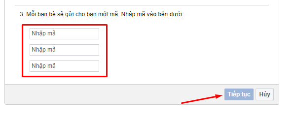
Cuối cùng, sau khi đã hoàn thành xong việc xác nhận, bạn chỉ việc thiết lập lại mật khẩu mới cho tài khoản Facebook của bạn. Sau khi thiết lập xong, bạn hãy truy cập vào email đã thiết lập ở Bước 4 để lấy link khôi phục lại tài khoản Facebook của bạn nhé.
Như vậy là bạn đã hoàn thành việc lấy lại mật khẩu Facebook thông qua danh sách bạn bè liên hệ tin cậy rồi nhé.
Trên đây là một số cách lấy lại mật khẩu Facebook vô cùng hiệu quả khi bạn vô tình quên. Để tránh trường hợp khi quên mật khẩu facebook mà không có thông tin nào lấy lại, sau khi tạo tài khoản Facebook bạn hãy điền đầy đủ thông tin bao gồm email, số điện thoại, địa chỉ bạn bè tin cậy. Nếu bạn không thực hiện được hay gặp các trường hợp ngoại lệ khác thì đừng quên để lại bình luận ngay dưới đây để chúng tôi hỗ trợ bạn nhé. Hy vọng bài viết hữu ích với bạn, chúc bạn thực hiện thành công!